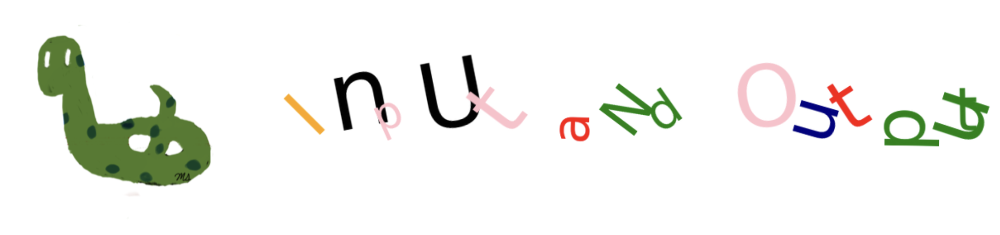

<!DOCTYPE html>


<html lang="en" >

  <head>
    <meta charset="utf-8" />
    <meta name="viewport" content="width=device-width, initial-scale=1.0" /><meta name="generator" content="Docutils 0.18.1: http://docutils.sourceforge.net/" />

    <title>Chp-2: Input and Output &#8212; Python in Plain Terms</title>
  
  
  
  <script data-cfasync="false">
    document.documentElement.dataset.mode = localStorage.getItem("mode") || "";
    document.documentElement.dataset.theme = localStorage.getItem("theme") || "light";
  </script>
  
  <!-- Loaded before other Sphinx assets -->
  <link href="_static/styles/theme.css?digest=365ca57ee442770a23c6" rel="stylesheet" />
<link href="_static/styles/bootstrap.css?digest=365ca57ee442770a23c6" rel="stylesheet" />
<link href="_static/styles/pydata-sphinx-theme.css?digest=365ca57ee442770a23c6" rel="stylesheet" />

  
  <link href="_static/vendor/fontawesome/6.1.2/css/all.min.css?digest=365ca57ee442770a23c6" rel="stylesheet" />
  <link rel="preload" as="font" type="font/woff2" crossorigin href="_static/vendor/fontawesome/6.1.2/webfonts/fa-solid-900.woff2" />
<link rel="preload" as="font" type="font/woff2" crossorigin href="_static/vendor/fontawesome/6.1.2/webfonts/fa-brands-400.woff2" />
<link rel="preload" as="font" type="font/woff2" crossorigin href="_static/vendor/fontawesome/6.1.2/webfonts/fa-regular-400.woff2" />

    <link rel="stylesheet" type="text/css" href="_static/pygments.css" />
    <link rel="stylesheet" href="_static/styles/sphinx-book-theme.css?digest=14f4ca6b54d191a8c7657f6c759bf11a5fb86285" type="text/css" />
    <link rel="stylesheet" type="text/css" href="_static/togglebutton.css" />
    <link rel="stylesheet" type="text/css" href="_static/copybutton.css" />
    <link rel="stylesheet" type="text/css" href="_static/mystnb.4510f1fc1dee50b3e5859aac5469c37c29e427902b24a333a5f9fcb2f0b3ac41.css" />
    <link rel="stylesheet" type="text/css" href="_static/sphinx-thebe.css" />
    <link rel="stylesheet" type="text/css" href="_static/design-style.4045f2051d55cab465a707391d5b2007.min.css" />
  
  <!-- Pre-loaded scripts that we'll load fully later -->
  <link rel="preload" as="script" href="_static/scripts/bootstrap.js?digest=365ca57ee442770a23c6" />
<link rel="preload" as="script" href="_static/scripts/pydata-sphinx-theme.js?digest=365ca57ee442770a23c6" />
  <script src="_static/vendor/fontawesome/6.1.2/js/all.min.js?digest=365ca57ee442770a23c6"></script>

    <script data-url_root="./" id="documentation_options" src="_static/documentation_options.js"></script>
    <script src="_static/jquery.js"></script>
    <script src="_static/underscore.js"></script>
    <script src="_static/_sphinx_javascript_frameworks_compat.js"></script>
    <script src="_static/doctools.js"></script>
    <script src="_static/clipboard.min.js"></script>
    <script src="_static/copybutton.js"></script>
    <script src="_static/scripts/sphinx-book-theme.js?digest=5a5c038af52cf7bc1a1ec88eea08e6366ee68824"></script>
    <script>let toggleHintShow = 'Click to show';</script>
    <script>let toggleHintHide = 'Click to hide';</script>
    <script>let toggleOpenOnPrint = 'true';</script>
    <script src="_static/togglebutton.js"></script>
    <script>var togglebuttonSelector = '.toggle, .admonition.dropdown';</script>
    <script src="_static/design-tabs.js"></script>
    <script>const THEBE_JS_URL = "https://unpkg.com/thebe@0.8.2/lib/index.js"
const thebe_selector = ".thebe,.cell"
const thebe_selector_input = "pre"
const thebe_selector_output = ".output, .cell_output"
</script>
    <script async="async" src="_static/sphinx-thebe.js"></script>
    <script>DOCUMENTATION_OPTIONS.pagename = 'inout';</script>
    <link rel="index" title="Index" href="genindex.html" />
    <link rel="search" title="Search" href="search.html" />
    <link rel="next" title="Input and Output Debugging" href="inout_debug.html" />
    <link rel="prev" title="Variables Exercises" href="variables_exercise.html" />
  <meta name="viewport" content="width=device-width, initial-scale=1"/>
  <meta name="docsearch:language" content="en"/>
  </head>
  
  
  <body data-bs-spy="scroll" data-bs-target=".bd-toc-nav" data-offset="180" data-bs-root-margin="0px 0px -60%" data-default-mode="">

  
  
  <a class="skip-link" href="#main-content">Skip to main content</a>
  
  <div id="pst-scroll-pixel-helper"></div>

  
  <button type="button" class="btn rounded-pill" id="pst-back-to-top">
    <i class="fa-solid fa-arrow-up"></i>
    Back to top
  </button>

  
  <input type="checkbox"
          class="sidebar-toggle"
          name="__primary"
          id="__primary"/>
  <label class="overlay overlay-primary" for="__primary"></label>
  
  <input type="checkbox"
          class="sidebar-toggle"
          name="__secondary"
          id="__secondary"/>
  <label class="overlay overlay-secondary" for="__secondary"></label>
  
  <div class="search-button__wrapper">
    <div class="search-button__overlay"></div>
    <div class="search-button__search-container">
<form class="bd-search d-flex align-items-center"
      action="search.html"
      method="get">
  <i class="fa-solid fa-magnifying-glass"></i>
  <input type="search"
         class="form-control"
         name="q"
         id="search-input"
         placeholder="Search this book..."
         aria-label="Search this book..."
         autocomplete="off"
         autocorrect="off"
         autocapitalize="off"
         spellcheck="false"/>
  <span class="search-button__kbd-shortcut"><kbd class="kbd-shortcut__modifier">Ctrl</kbd>+<kbd>K</kbd></span>
</form></div>
  </div>
  
    <nav class="bd-header navbar navbar-expand-lg bd-navbar">
    </nav>
  
  <div class="bd-container">
    <div class="bd-container__inner bd-page-width">
      
      <div class="bd-sidebar-primary bd-sidebar">
        

  
  <div class="sidebar-header-items sidebar-primary__section">
    
    
    
    
  </div>
  
    <div class="sidebar-primary-items__start sidebar-primary__section">
        <div class="sidebar-primary-item">
  

<a class="navbar-brand logo" href="cover.html">
  
  
  
  
  
    
    
      
    
    
    
    <script>document.write(``);</script>
  
  
</a></div>
        <div class="sidebar-primary-item"><nav class="bd-links" id="bd-docs-nav" aria-label="Main">
    <div class="bd-toc-item navbar-nav active">
        
        <ul class="nav bd-sidenav bd-sidenav__home-link">
            <li class="toctree-l1">
                <a class="reference internal" href="cover.html">
                    Cover
                </a>
            </li>
        </ul>
        <ul class="current nav bd-sidenav">
<li class="toctree-l1"><a class="reference internal" href="preface.html">Preface</a></li>
<li class="toctree-l1"><a class="reference internal" href="acknowledge.html">Acknowledgments</a></li>
<li class="toctree-l1"><a class="reference internal" href="python.html">Python Introduction</a></li>
<li class="toctree-l1 has-children"><a class="reference internal" href="colab.html">Google Colab</a><input class="toctree-checkbox" id="toctree-checkbox-1" name="toctree-checkbox-1" type="checkbox"/><label class="toctree-toggle" for="toctree-checkbox-1"><i class="fa-solid fa-chevron-down"></i></label><ul>
<li class="toctree-l2 has-children"><a class="reference internal" href="colab_text.html">Text Cell</a><input class="toctree-checkbox" id="toctree-checkbox-2" name="toctree-checkbox-2" type="checkbox"/><label class="toctree-toggle" for="toctree-checkbox-2"><i class="fa-solid fa-chevron-down"></i></label><ul>
<li class="toctree-l3"><a class="reference internal" href="colab_text_questions.html">Text Cell Questions</a></li>
</ul>
</li>
<li class="toctree-l2 has-children"><a class="reference internal" href="colab_code.html">Code Cell</a><input class="toctree-checkbox" id="toctree-checkbox-3" name="toctree-checkbox-3" type="checkbox"/><label class="toctree-toggle" for="toctree-checkbox-3"><i class="fa-solid fa-chevron-down"></i></label><ul>
<li class="toctree-l3"><a class="reference internal" href="colab_code_questions.html">Code Cell Questions</a></li>
</ul>
</li>
<li class="toctree-l2"><a class="reference internal" href="colab_exercises.html">Colab Exercises</a></li>

</ul>
</li>
<li class="toctree-l1 has-children"><a class="reference internal" href="variables.html">Chp-1: Variables</a><input class="toctree-checkbox" id="toctree-checkbox-4" name="toctree-checkbox-4" type="checkbox"/><label class="toctree-toggle" for="toctree-checkbox-4"><i class="fa-solid fa-chevron-down"></i></label><ul>
<li class="toctree-l2"><a class="reference internal" href="variables_debug.html">Variables Debugging</a></li>
<li class="toctree-l2"><a class="reference internal" href="variables_output.html">Variables Output</a></li>
<li class="toctree-l2"><a class="reference internal" href="variables_code.html">Variables Code</a></li>
<li class="toctree-l2"><a class="reference internal" href="variables_exercise.html">Variables Exercises</a></li>
</ul>
</li>
<li class="toctree-l1 current active has-children"><a class="current reference internal" href="#">Chp-2: Input and Output</a><input checked="" class="toctree-checkbox" id="toctree-checkbox-5" name="toctree-checkbox-5" type="checkbox"/><label class="toctree-toggle" for="toctree-checkbox-5"><i class="fa-solid fa-chevron-down"></i></label><ul>
<li class="toctree-l2"><a class="reference internal" href="inout_debug.html">Input and Output Debugging</a></li>
<li class="toctree-l2"><a class="reference internal" href="inout_output.html">Input and Output  Output</a></li>
<li class="toctree-l2"><a class="reference internal" href="inout_code.html">Input and Output Code</a></li>
<li class="toctree-l2"><a class="reference internal" href="inout_exercise.html">Input and Output Exercises</a></li>
</ul>
</li>
<li class="toctree-l1 has-children"><a class="reference internal" href="numbers_arithmetic.html">Chp-3: Numbers</a><input class="toctree-checkbox" id="toctree-checkbox-6" name="toctree-checkbox-6" type="checkbox"/><label class="toctree-toggle" for="toctree-checkbox-6"><i class="fa-solid fa-chevron-down"></i></label><ul>
<li class="toctree-l2"><a class="reference internal" href="numbers_arithmetic_debug.html">Numbers Debugging</a></li>
<li class="toctree-l2"><a class="reference internal" href="numbers_arithmetic_output.html">Numbers Output</a></li>
<li class="toctree-l2"><a class="reference internal" href="numbers_arithmetic_code.html">Numbers Code</a></li>
<li class="toctree-l2"><a class="reference internal" href="numbers_arithmetic_exercise.html">Numbers Exercises</a></li>
</ul>
</li>
<li class="toctree-l1 has-children"><a class="reference internal" href="strings.html">Chp-4: Strings</a><input class="toctree-checkbox" id="toctree-checkbox-7" name="toctree-checkbox-7" type="checkbox"/><label class="toctree-toggle" for="toctree-checkbox-7"><i class="fa-solid fa-chevron-down"></i></label><ul>
<li class="toctree-l2"><a class="reference internal" href="strings_debug.html">Strings Debugging</a></li>
<li class="toctree-l2"><a class="reference internal" href="strings_output.html">Strings Output</a></li>
<li class="toctree-l2"><a class="reference internal" href="strings_code.html">Strings Code</a></li>
<li class="toctree-l2"><a class="reference internal" href="strings_exercise.html">Strings Exercises</a></li>
</ul>
</li>
<li class="toctree-l1 has-children"><a class="reference internal" href="conditionals.html">Chp-5: Conditionals</a><input class="toctree-checkbox" id="toctree-checkbox-8" name="toctree-checkbox-8" type="checkbox"/><label class="toctree-toggle" for="toctree-checkbox-8"><i class="fa-solid fa-chevron-down"></i></label><ul>
<li class="toctree-l2"><a class="reference internal" href="conditionals_debug.html">Conditionals Debugging</a></li>
<li class="toctree-l2"><a class="reference internal" href="conditionals_output.html">Conditionals Output</a></li>
<li class="toctree-l2"><a class="reference internal" href="conditionals_code.html">Conditionals Code</a></li>
<li class="toctree-l2"><a class="reference internal" href="conditionals_exercise.html">Conditionals Exercises</a></li>
</ul>
</li>
<li class="toctree-l1 has-children"><a class="reference internal" href="iterations.html">Chp-6: Iterations</a><input class="toctree-checkbox" id="toctree-checkbox-9" name="toctree-checkbox-9" type="checkbox"/><label class="toctree-toggle" for="toctree-checkbox-9"><i class="fa-solid fa-chevron-down"></i></label><ul>
<li class="toctree-l2"><a class="reference internal" href="iterations_debug.html">Iterations Debugging</a></li>
<li class="toctree-l2"><a class="reference internal" href="iterations_output.html">Iterations Output</a></li>
<li class="toctree-l2"><a class="reference internal" href="iterations_code.html">Iterations Code</a></li>
<li class="toctree-l2"><a class="reference internal" href="iterations_exercise.html">Iterations Exercises</a></li>
</ul>
</li>
<li class="toctree-l1 has-children"><a class="reference internal" href="tuples.html">Chp-7: Tuples</a><input class="toctree-checkbox" id="toctree-checkbox-10" name="toctree-checkbox-10" type="checkbox"/><label class="toctree-toggle" for="toctree-checkbox-10"><i class="fa-solid fa-chevron-down"></i></label><ul>
<li class="toctree-l2"><a class="reference internal" href="tuples_debug.html">Tuples Debugging</a></li>
<li class="toctree-l2"><a class="reference internal" href="tuples_output.html">Tuples Output</a></li>
<li class="toctree-l2"><a class="reference internal" href="tuples_code.html">Tuples Code</a></li>
<li class="toctree-l2"><a class="reference internal" href="tuples_exercise.html">Tuples Exercises</a></li>
</ul>
</li>
<li class="toctree-l1 has-children"><a class="reference internal" href="lists.html">Chp-8: Lists</a><input class="toctree-checkbox" id="toctree-checkbox-11" name="toctree-checkbox-11" type="checkbox"/><label class="toctree-toggle" for="toctree-checkbox-11"><i class="fa-solid fa-chevron-down"></i></label><ul>
<li class="toctree-l2"><a class="reference internal" href="lists_debug.html">Lists Debugging</a></li>
<li class="toctree-l2"><a class="reference internal" href="lists_output.html">Lists Output</a></li>
<li class="toctree-l2"><a class="reference internal" href="lists_code.html">Lists Code</a></li>
<li class="toctree-l2"><a class="reference internal" href="lists_exercise.html">Lists Exercises</a></li>
</ul>
</li>
<li class="toctree-l1 has-children"><a class="reference internal" href="functions.html">Chp-9: Functions</a><input class="toctree-checkbox" id="toctree-checkbox-12" name="toctree-checkbox-12" type="checkbox"/><label class="toctree-toggle" for="toctree-checkbox-12"><i class="fa-solid fa-chevron-down"></i></label><ul>
<li class="toctree-l2"><a class="reference internal" href="functions_debug.html">Functions Debugging</a></li>
<li class="toctree-l2"><a class="reference internal" href="functions_output.html">Functions Output</a></li>
<li class="toctree-l2"><a class="reference internal" href="functions_code.html">Functions Code</a></li>
<li class="toctree-l2"><a class="reference internal" href="functions_exercise.html">Functions Exercises</a></li>
</ul>
</li>
<li class="toctree-l1 has-children"><a class="reference internal" href="sets.html">Chp-10: Sets</a><input class="toctree-checkbox" id="toctree-checkbox-13" name="toctree-checkbox-13" type="checkbox"/><label class="toctree-toggle" for="toctree-checkbox-13"><i class="fa-solid fa-chevron-down"></i></label><ul>
<li class="toctree-l2"><a class="reference internal" href="sets_debug.html">Sets Debugging</a></li>
<li class="toctree-l2"><a class="reference internal" href="sets_output.html">Sets Output</a></li>
<li class="toctree-l2"><a class="reference internal" href="sets_code.html">Sets Code</a></li>
</ul>
</li>
<li class="toctree-l1 has-children"><a class="reference internal" href="dictionaries.html">Chp-11: Dictionaries</a><input class="toctree-checkbox" id="toctree-checkbox-14" name="toctree-checkbox-14" type="checkbox"/><label class="toctree-toggle" for="toctree-checkbox-14"><i class="fa-solid fa-chevron-down"></i></label><ul>
<li class="toctree-l2"><a class="reference internal" href="dictionaries_debug.html">Dictionaries Debugging</a></li>
<li class="toctree-l2"><a class="reference internal" href="dictionaries_output.html">Dictionaries Output</a></li>
<li class="toctree-l2"><a class="reference internal" href="dictionaries_code.html">Dictionaries Code</a></li>
</ul>
</li>
<li class="toctree-l1"><a class="reference internal" href="numpy_arrays.html">Chp-12: Numpy Arrays</a></li>
<li class="toctree-l1"><a class="reference internal" href="visualization.html">Chp-13: Visualization</a></li>
</ul>

    </div>
</nav></div>
    </div>
  
  
  <div class="sidebar-primary-items__end sidebar-primary__section">
  </div>
  
  <div id="rtd-footer-container"></div>


      </div>
      
      <main id="main-content" class="bd-main">
        
        

<div class="sbt-scroll-pixel-helper"></div>

          <div class="bd-content">
            <div class="bd-article-container">
              
              <div class="bd-header-article">
<div class="header-article-items header-article__inner">
  
    <div class="header-article-items__start">
      
        <div class="header-article-item"><label class="sidebar-toggle primary-toggle btn btn-sm" for="__primary" title="Toggle primary sidebar" data-bs-placement="bottom" data-bs-toggle="tooltip">
  <span class="fa-solid fa-bars"></span>
</label></div>
      
    </div>
  
  
    <div class="header-article-items__end">
      
        <div class="header-article-item">

<div class="article-header-buttons">


<div class="dropdown dropdown-download-buttons">
  <button class="btn dropdown-toggle" type="button" data-bs-toggle="dropdown" aria-expanded="false" aria-label="Download this page">
    <i class="fas fa-download"></i>
  </button>
  <ul class="dropdown-menu">
      
      
      
      <li><a href="_sources/inout.ipynb" target="_blank"
   class="btn btn-sm btn-download-source-button dropdown-item"
   title="Download source file"
   data-bs-placement="left" data-bs-toggle="tooltip"
>
  

<span class="btn__icon-container">
  <i class="fas fa-file"></i>
  </span>
<span class="btn__text-container">.ipynb</span>
</a>
</li>
      
      
      
      
      <li>
<button onclick="window.print()"
  class="btn btn-sm btn-download-pdf-button dropdown-item"
  title="Print to PDF"
  data-bs-placement="left" data-bs-toggle="tooltip"
>
  

<span class="btn__icon-container">
  <i class="fas fa-file-pdf"></i>
  </span>
<span class="btn__text-container">.pdf</span>
</button>
</li>
      
  </ul>
</div>


<button onclick="toggleFullScreen()"
  class="btn btn-sm btn-fullscreen-button"
  title="Fullscreen mode"
  data-bs-placement="bottom" data-bs-toggle="tooltip"
>
  

<span class="btn__icon-container">
  <i class="fas fa-expand"></i>
  </span>

</button>


<script>
document.write(`
  <button class="btn btn-sm navbar-btn theme-switch-button" title="light/dark" aria-label="light/dark" data-bs-placement="bottom" data-bs-toggle="tooltip">
    <span class="theme-switch nav-link" data-mode="light"><i class="fa-solid fa-sun fa-lg"></i></span>
    <span class="theme-switch nav-link" data-mode="dark"><i class="fa-solid fa-moon fa-lg"></i></span>
    <span class="theme-switch nav-link" data-mode="auto"><i class="fa-solid fa-circle-half-stroke fa-lg"></i></span>
  </button>
`);
</script>

<script>
document.write(`
  <button class="btn btn-sm navbar-btn search-button search-button__button" title="Search" aria-label="Search" data-bs-placement="bottom" data-bs-toggle="tooltip">
    <i class="fa-solid fa-magnifying-glass fa-lg"></i>
  </button>
`);
</script>
<label class="sidebar-toggle secondary-toggle btn btn-sm" for="__secondary"title="Toggle secondary sidebar" data-bs-placement="bottom" data-bs-toggle="tooltip">
    <span class="fa-solid fa-list"></span>
</label>
</div></div>
      
    </div>
  
</div>
</div>
              
              

<div id="jb-print-docs-body" class="onlyprint">
    <h1>Chp-2: Input and Output</h1>
    <!-- Table of contents -->
    <div id="print-main-content">
        <div id="jb-print-toc">
            
            <div>
                <h2> Contents </h2>
            </div>
            <nav aria-label="Page">
                <ul class="visible nav section-nav flex-column">
<li class="toc-h2 nav-item toc-entry"><a class="reference internal nav-link" href="#input">input()</a><ul class="nav section-nav flex-column">
<li class="toc-h3 nav-item toc-entry"><a class="reference internal nav-link" href="#receipt-example">Receipt Example</a></li>
</ul>
</li>
<li class="toc-h2 nav-item toc-entry"><a class="reference internal nav-link" href="#whitespaces">Whitespaces</a></li>
<li class="toc-h2 nav-item toc-entry"><a class="reference internal nav-link" href="#print">print()</a><ul class="nav section-nav flex-column">
<li class="toc-h3 nav-item toc-entry"><a class="reference internal nav-link" href="#sep-parameter">sep parameter</a></li>
<li class="toc-h3 nav-item toc-entry"><a class="reference internal nav-link" href="#end-parameter">end parameter</a></li>
</ul>
</li>
<li class="toc-h2 nav-item toc-entry"><a class="reference internal nav-link" href="#examples">Examples</a><ul class="nav section-nav flex-column">
<li class="toc-h3 nav-item toc-entry"><a class="reference internal nav-link" href="#moving-o-right">Moving O (right)</a></li>
<li class="toc-h3 nav-item toc-entry"><a class="reference internal nav-link" href="#moving-o-left">Moving O (left)</a></li>
</ul>
</li>
</ul>
            </nav>
        </div>
    </div>
</div>

              
                
<div id="searchbox"></div>
                <article class="bd-article" role="main">
                  
  <section class="tex2jax_ignore mathjax_ignore" id="chp-2-input-and-output">
<h1>Chp-2: Input and Output<a class="headerlink" href="#chp-2-input-and-output" title="Permalink to this heading">#</a></h1>
<p></p>
<div class="tip admonition">
<p class="admonition-title">Chapter Objectives</p>
<p>By the end of this chapter, the student should be able to:</p>
<ul class="simple">
<li><p>Explain the purpose of input() and print() functions in Python, for managing user input and showing output.</p></li>
<li><p>Apply input() to prompt users for input, handling different data types entered.</p></li>
<li><p>Apply print() to display output, understanding formatting options like separators and line breaks.</p></li>
<li><p>Use whitespace characters in Python output and manipulate them for formatting.</p></li>
<li><p>Use escape sequences to control whitespace characters in printed output.</p></li>
</ul>
</div>
<section id="input">
<h2>input()<a class="headerlink" href="#input" title="Permalink to this heading">#</a></h2>
<p>The <em>input()</em> function is a built-in function used to obtain data or information from the user.</p>
<ul class="simple">
<li><p>It returns a string.</p></li>
<li><p>To receive a number from the user, you’ll need to convert the output of the <em>input()</em> function to an integer or float.</p></li>
<li><p>You can include a message as a string to provide directions to the user.</p></li>
<li><p>Upon running the code, your message will be displayed, and a box will prompt the user for input.</p></li>
<li><p>After entering the input, the user should press the enter key.</p></li>
</ul>
<p>In the following code, the user is prompted with the message <code class="docutils literal notranslate"><span class="pre">Enter</span> <span class="pre">your</span> <span class="pre">birth</span> <span class="pre">year:</span> </code>.</p>
<div class="highlight-python notranslate"><div class="highlight"><pre><span></span><span class="nb">input</span><span class="p">(</span><span class="s1">&#39;Enter your birth year: &#39;</span><span class="p">)</span>
</pre></div>
</div>
<p>Two important points in the code above:</p>
<ol class="arabic simple">
<li><p>Even though the user enters a number, the <em>input()</em> function returns a string.</p>
<ul class="simple">
<li><p>To perform algebraic operations, you’ll need to convert it to an integer or float.</p></li>
</ul>
</li>
<li><p>We must assign the value given by the user to a variable to store and use it.</p>
<ul class="simple">
<li><p>In the provided code, as no variable is used, there’s no way to access the given birth year in subsequent lines.</p></li>
</ul>
</li>
</ol>
<p>In the following code, we will once again ask for the user’s birth year, but this time we will assign it to a variable.</p>
<ul class="simple">
<li><p>This way, we will be able to access the birth year through the variable <code class="docutils literal notranslate"><span class="pre">birth_year</span></code> in any cell.</p></li>
<li><p>Note that the type of the <code class="docutils literal notranslate"><span class="pre">birth_year</span></code> variable is <em>string</em> because the <em>input()</em> function returns any entered value as a string.</p></li>
</ul>
<div class="highlight-python notranslate"><div class="highlight"><pre><span></span><span class="n">birth_year</span> <span class="o">=</span> <span class="nb">input</span><span class="p">(</span><span class="s1">&#39;Enter your birth year: &#39;</span><span class="p">)</span>

<span class="nb">print</span><span class="p">(</span><span class="s1">&#39;birth_year type:&#39;</span><span class="p">,</span> <span class="nb">type</span><span class="p">(</span><span class="n">birth_year</span><span class="p">))</span>
</pre></div>
</div>
<p><strong>Output</strong><br />
Enter your birth year:  2000<br />
birth_year type: &lt;class ‘str’&gt;</p>
<ul class="simple">
<li><p>If you intend to perform algebraic operations, such as calculating age, using the <code class="docutils literal notranslate"><span class="pre">birth_year</span></code> variable, you’ll need to convert it to a numerical type.</p></li>
<li><p>Otherwise, an error message will be generated.</p></li>
</ul>
<div class="highlight-python notranslate"><div class="highlight"><pre><span></span><span class="n">birth_year</span> <span class="o">=</span> <span class="nb">input</span><span class="p">(</span><span class="s1">&#39;Enter your birth year: &#39;</span><span class="p">)</span>

<span class="n">age</span> <span class="o">=</span> <span class="mi">2024</span> <span class="o">-</span> <span class="n">birth_year</span>  <span class="c1"># ERROR: integer 2024 -  string birth_year</span>
</pre></div>
</div>
<ul class="simple">
<li><p>To avoid this, convert <code class="docutils literal notranslate"><span class="pre">birth_year</span></code> to an integer. This can be done in a couple of different ways.</p></li>
<li><p>In the second line of the following code, the integer value of <em>birth_year</em> is used in subtraction.</p></li>
</ul>
<div class="highlight-python notranslate"><div class="highlight"><pre><span></span><span class="n">birth_year</span> <span class="o">=</span> <span class="nb">input</span><span class="p">(</span><span class="s1">&#39;Enter your birth year: &#39;</span><span class="p">)</span>

<span class="n">age</span> <span class="o">=</span> <span class="mi">2024</span> <span class="o">-</span> <span class="nb">int</span><span class="p">(</span><span class="n">birth_year</span><span class="p">)</span>    

<span class="nb">print</span><span class="p">(</span><span class="s1">&#39;Your age is&#39;</span><span class="p">,</span> <span class="n">age</span><span class="p">)</span>
<span class="nb">print</span><span class="p">(</span><span class="s1">&#39;birth_year type:&#39;</span><span class="p">,</span> <span class="nb">type</span><span class="p">(</span><span class="n">birth_year</span><span class="p">))</span>
</pre></div>
</div>
<p><strong>Output</strong><br />
Enter your birth year:  2000<br />
Your age is 24<br />
birth_year type: &lt;class ‘str’&gt;</p>
<ul class="simple">
<li><p>In the above code, the type of <code class="docutils literal notranslate"><span class="pre">birth_year</span></code> was not changed; it remains a string because we did not assign a new value to it.</p></li>
<li><p>This can be accomplished in a concise manner at the very beginning of the code.</p></li>
</ul>
<div class="highlight-python notranslate"><div class="highlight"><pre><span></span><span class="n">birth_year</span> <span class="o">=</span> <span class="nb">input</span><span class="p">(</span><span class="s1">&#39;Enter your birth year: &#39;</span><span class="p">)</span>
<span class="n">birth_year</span> <span class="o">=</span> <span class="nb">int</span><span class="p">(</span><span class="n">birth_year</span><span class="p">)</span>   <span class="c1"># assign a new value to the birth_year variable</span>

<span class="n">age</span> <span class="o">=</span> <span class="mi">2024</span> <span class="o">-</span> <span class="n">birth_year</span> 

<span class="nb">print</span><span class="p">(</span><span class="s1">&#39;Your age is&#39;</span><span class="p">,</span> <span class="n">age</span><span class="p">)</span>
<span class="nb">print</span><span class="p">(</span><span class="s1">&#39;birth_year type:&#39;</span><span class="p">,</span> <span class="nb">type</span><span class="p">(</span><span class="n">birth_year</span><span class="p">))</span>
</pre></div>
</div>
<p><strong>Output</strong><br />
Enter your birth year: 2000<br />
Your age is 24<br />
birth_year type: &lt;class ‘int’&gt;</p>
<ul class="simple">
<li><p>There is a shortcut for performing this conversion.</p></li>
<li><p>Upon receiving input from the user, we can immediately convert that value to an integer.</p></li>
<li><p>In the following code, the <em>input()</em> function returns a string, and the <em>int()</em> function converts this string to an integer.</p></li>
</ul>
<div class="highlight-python notranslate"><div class="highlight"><pre><span></span><span class="n">birth_year</span> <span class="o">=</span> <span class="nb">int</span><span class="p">(</span><span class="nb">input</span><span class="p">(</span><span class="s1">&#39;Enter your birth year: &#39;</span><span class="p">))</span>  

<span class="n">age</span> <span class="o">=</span> <span class="mi">2024</span> <span class="o">-</span> <span class="n">birth_year</span> 

<span class="nb">print</span><span class="p">(</span><span class="s1">&#39;Your age is&#39;</span><span class="p">,</span> <span class="n">age</span><span class="p">)</span>
<span class="nb">print</span><span class="p">(</span><span class="s1">&#39;Birth year type:&#39;</span><span class="p">,</span> <span class="nb">type</span><span class="p">(</span><span class="n">birth_year</span><span class="p">))</span>
</pre></div>
</div>
<p><strong>Output</strong><br />
Enter your birth year: 2000<br />
Your age is 24<br />
Birth year type: &lt;class ‘int’&gt;</p>
<section id="receipt-example">
<h3>Receipt Example<a class="headerlink" href="#receipt-example" title="Permalink to this heading">#</a></h3>
<ul class="simple">
<li><p>You can use the <code class="docutils literal notranslate"><span class="pre">input()</span></code> function multiple times.</p></li>
<li><p>In the following example, the user enters the quantity of hamburgers and sodas, and the final receipt, including tax and tip, is printed.</p>
<ul>
<li><p>The price of a hamburger is $5.</p></li>
<li><p>The price of a coke is $2.</p></li>
<li><p>The tip is 15%.</p></li>
<li><p>The tax is 10%.</p></li>
</ul>
</li>
<li><p>Possible improvements:</p>
<ul>
<li><p>You can also include the time and date by using the datetime module.</p></li>
<li><p>Consider rounding the tax, tip, and total amounts.</p></li>
</ul>
</li>
</ul>
<div class="highlight-python notranslate"><div class="highlight"><pre><span></span><span class="n">hamburger</span> <span class="o">=</span> <span class="nb">int</span><span class="p">(</span><span class="nb">input</span><span class="p">(</span><span class="s1">&#39;Number of hamburgers:&#39;</span><span class="p">))</span>  
<span class="n">soda</span> <span class="o">=</span> <span class="nb">int</span><span class="p">(</span><span class="nb">input</span><span class="p">(</span><span class="s1">&#39;Number of sodas:&#39;</span><span class="p">))</span>            

<span class="n">subtotal</span> <span class="o">=</span> <span class="n">hamburger</span><span class="o">*</span><span class="mi">5</span><span class="o">+</span><span class="n">soda</span><span class="o">*</span><span class="mi">2</span>   
<span class="n">tip</span> <span class="o">=</span> <span class="n">subtotal</span><span class="o">*</span><span class="mf">0.15</span>
<span class="n">tax</span> <span class="o">=</span> <span class="n">subtotal</span><span class="o">*</span><span class="mf">0.10</span>
<span class="n">total</span> <span class="o">=</span> <span class="n">subtotal</span><span class="o">+</span><span class="n">tip</span><span class="o">+</span><span class="n">tax</span>


<span class="nb">print</span><span class="p">(</span><span class="s1">&#39;Hamburger:&#39;</span><span class="p">,</span><span class="n">hamburger</span><span class="p">,</span><span class="s1">&#39;x 5= &#39;</span><span class="p">,</span><span class="n">hamburger</span><span class="o">*</span><span class="mi">5</span><span class="p">)</span>
<span class="nb">print</span><span class="p">(</span><span class="s1">&#39;Soda     :&#39;</span><span class="p">,</span><span class="n">soda</span><span class="p">,</span><span class="s1">&#39;x 2= &#39;</span><span class="p">,</span><span class="n">soda</span><span class="o">*</span><span class="mi">2</span><span class="p">)</span>
<span class="nb">print</span><span class="p">(</span><span class="s1">&#39;Tip      :         &#39;</span><span class="p">,</span><span class="n">tip</span><span class="p">)</span>
<span class="nb">print</span><span class="p">(</span><span class="s1">&#39;Tax      :         &#39;</span><span class="p">,</span><span class="n">tax</span><span class="p">)</span>
<span class="nb">print</span><span class="p">(</span><span class="s1">&#39;Total    :         &#39;</span><span class="p">,</span><span class="n">total</span><span class="p">)</span>
</pre></div>
</div>
<p><strong>Output</strong></p>
<p>Number of hamburgers:10<br />
Number of sodas     :20<br />
Hamburger: 10 x 5= * 50<br />
Soda     : 20 x 2=  40<br />
Tip      :          13.5<br />
Tax      :          9.0<br />
Total    :          112.5</p>
</section>
</section>
<section id="whitespaces">
<h2>Whitespaces<a class="headerlink" href="#whitespaces" title="Permalink to this heading">#</a></h2>
<p>The following whitespace characters are frequently used in print statements for spacing.</p>
<ul class="simple">
<li><p><code class="docutils literal notranslate"><span class="pre">\n</span></code>: new line</p>
<ul>
<li><p>Moves to the next line.</p></li>
</ul>
</li>
<li><p><code class="docutils literal notranslate"><span class="pre">\t</span></code>: tab</p>
<ul>
<li><p>Inserts a tabulation</p></li>
<li><p>Inserts spaces up to the next tab stop, which occurs every 8th character.</p></li>
</ul>
</li>
<li><p><code class="docutils literal notranslate"><span class="pre">\b</span></code>: backspace</p>
<ul>
<li><p>Deletes the character to the left.</p></li>
</ul>
</li>
<li><p><code class="docutils literal notranslate"><span class="pre">\r</span></code>: carriage return</p>
<ul>
<li><p>Moves to the beginning of the line.</p></li>
<li><p>In Jupyter notebook, it does not delete any characters.</p></li>
<li><p>In Google Colab, it deletes all characters.</p></li>
</ul>
</li>
</ul>
<div class="cell docutils container">
<div class="cell_input docutils container">
<div class="highlight-ipython3 notranslate"><div class="highlight"><pre><span></span><span class="nb">print</span><span class="p">(</span><span class="s1">&#39;A</span><span class="se">\n</span><span class="s1">B&#39;</span><span class="p">)</span> <span class="c1"># after A it moves to the next line</span>
</pre></div>
</div>
</div>
<div class="cell_output docutils container">
<div class="output stream highlight-myst-ansi notranslate"><div class="highlight"><pre><span></span>A
B
</pre></div>
</div>
</div>
</div>
<div class="cell docutils container">
<div class="cell_input docutils container">
<div class="highlight-ipython3 notranslate"><div class="highlight"><pre><span></span><span class="nb">print</span><span class="p">(</span><span class="s1">&#39;A       B&#39;</span><span class="p">)</span>     <span class="c1"># 7 spaces</span>
<span class="nb">print</span><span class="p">(</span><span class="s1">&#39;A&#39;</span><span class="o">+</span><span class="s1">&#39; &#39;</span><span class="o">*</span><span class="mi">7</span><span class="o">+</span><span class="s1">&#39;B&#39;</span><span class="p">)</span>   <span class="c1"># repetition of the string &#39; &#39; (one space) seven times</span>
<span class="nb">print</span><span class="p">(</span><span class="s1">&#39;A</span><span class="se">\t</span><span class="s1">B&#39;</span><span class="p">)</span>          <span class="c1"># tab</span>
</pre></div>
</div>
</div>
<div class="cell_output docutils container">
<div class="output stream highlight-myst-ansi notranslate"><div class="highlight"><pre><span></span>A       B
A       B
A	B
</pre></div>
</div>
</div>
</div>
<div class="cell docutils container">
<div class="cell_input docutils container">
<div class="highlight-ipython3 notranslate"><div class="highlight"><pre><span></span><span class="nb">print</span><span class="p">(</span><span class="s1">&#39;AA      B&#39;</span><span class="p">)</span>      <span class="c1"># 6 spaces</span>
<span class="nb">print</span><span class="p">(</span><span class="s1">&#39;AA&#39;</span><span class="o">+</span><span class="s1">&#39; &#39;</span><span class="o">*</span><span class="mi">6</span><span class="o">+</span><span class="s1">&#39;B&#39;</span><span class="p">)</span>   <span class="c1"># repetition of the string &#39; &#39; (one space) six times</span>
<span class="nb">print</span><span class="p">(</span><span class="s1">&#39;AA</span><span class="se">\t</span><span class="s1">B&#39;</span><span class="p">)</span>          <span class="c1"># tab</span>
</pre></div>
</div>
</div>
<div class="cell_output docutils container">
<div class="output stream highlight-myst-ansi notranslate"><div class="highlight"><pre><span></span>AA      B
AA      B
AA	B
</pre></div>
</div>
</div>
</div>
<div class="cell docutils container">
<div class="cell_input docutils container">
<div class="highlight-ipython3 notranslate"><div class="highlight"><pre><span></span><span class="nb">print</span><span class="p">(</span><span class="s1">&#39;AAA     B&#39;</span><span class="p">)</span>       <span class="c1"># 5 spaces</span>
<span class="nb">print</span><span class="p">(</span><span class="s1">&#39;AAA&#39;</span><span class="o">+</span><span class="s1">&#39; &#39;</span><span class="o">*</span><span class="mi">5</span><span class="o">+</span><span class="s1">&#39;B&#39;</span><span class="p">)</span>   <span class="c1"># repetition of the string &#39; &#39; (one space) five times</span>
<span class="nb">print</span><span class="p">(</span><span class="s1">&#39;AAA</span><span class="se">\t</span><span class="s1">B&#39;</span><span class="p">)</span>          <span class="c1"># tab</span>
</pre></div>
</div>
</div>
<div class="cell_output docutils container">
<div class="output stream highlight-myst-ansi notranslate"><div class="highlight"><pre><span></span>AAA     B
AAA     B
AAA	B
</pre></div>
</div>
</div>
</div>
<div class="cell docutils container">
<div class="cell_input docutils container">
<div class="highlight-ipython3 notranslate"><div class="highlight"><pre><span></span><span class="nb">print</span><span class="p">(</span><span class="s1">&#39;ABC</span><span class="se">\b</span><span class="s1">D&#39;</span><span class="p">)</span> <span class="c1"># C is deleted by &#39;\b&#39;</span>
</pre></div>
</div>
</div>
<div class="cell_output docutils container">
<div class="output stream highlight-myst-ansi notranslate"><div class="highlight"><pre><span></span>ABCD
</pre></div>
</div>
</div>
</div>
<div class="cell docutils container">
<div class="cell_input docutils container">
<div class="highlight-ipython3 notranslate"><div class="highlight"><pre><span></span><span class="nb">print</span><span class="p">(</span><span class="s1">&#39;ABC</span><span class="se">\b\b</span><span class="s1">D&#39;</span><span class="p">)</span> <span class="c1"># C and B are deleted by two &#39;\b&#39; s</span>
</pre></div>
</div>
</div>
<div class="cell_output docutils container">
<div class="output stream highlight-myst-ansi notranslate"><div class="highlight"><pre><span></span>ABCD
</pre></div>
</div>
</div>
</div>
<p>For Jupyter Notebook:</p>
<ul class="simple">
<li><p>In the following code, after the character ‘C’, the carriage return <code class="docutils literal notranslate"><span class="pre">\r</span></code> moves the cursor to the beginning of the line, and ‘D’ overwrites ‘A’.</p></li>
</ul>
<div class="highlight-python notranslate"><div class="highlight"><pre><span></span><span class="nb">print</span><span class="p">(</span><span class="s1">&#39;ABC</span><span class="se">\r</span><span class="s1">D&#39;</span><span class="p">)</span> <span class="c1"># carriage return </span>
</pre></div>
</div>
<ul class="simple">
<li><p>Output: DBC</p></li>
</ul>
<ul class="simple">
<li><p><strong>Warning:</strong> In Google Colab, the output of the provided code is D.</p></li>
</ul>
</section>
<section id="print">
<h2>print()<a class="headerlink" href="#print" title="Permalink to this heading">#</a></h2>
<p>The print() function is a built-in function that displays output on the screen.</p>
<ul class="simple">
<li><p>It has two significant parameters: <code class="docutils literal notranslate"><span class="pre">sep</span></code> and <code class="docutils literal notranslate"><span class="pre">end</span></code>.</p></li>
</ul>
<section id="sep-parameter">
<h3>sep parameter<a class="headerlink" href="#sep-parameter" title="Permalink to this heading">#</a></h3>
<ul class="simple">
<li><p>It is the separator parameter.</p></li>
<li><p>It determines what to insert between the comma-separated values in a print function.</p></li>
<li><p>The default value is a single space: <code class="docutils literal notranslate"><span class="pre">'</span> <span class="pre">'</span></code>.</p></li>
<li><p>sep values are strings</p></li>
</ul>
<div class="cell docutils container">
<div class="cell_input docutils container">
<div class="highlight-ipython3 notranslate"><div class="highlight"><pre><span></span><span class="n">name</span> <span class="o">=</span> <span class="s1">&#39;Tom&#39;</span>
<span class="n">age</span> <span class="o">=</span> <span class="mi">25</span>
<span class="nb">print</span><span class="p">(</span><span class="s1">&#39;A&#39;</span><span class="p">,</span> <span class="n">age</span><span class="p">,</span> <span class="s1">&#39;B&#39;</span><span class="p">,</span> <span class="n">name</span><span class="p">)</span>            <span class="c1"># by default there is one space between each value</span>
</pre></div>
</div>
</div>
<div class="cell_output docutils container">
<div class="output stream highlight-myst-ansi notranslate"><div class="highlight"><pre><span></span>A 25 B Tom
</pre></div>
</div>
</div>
</div>
<div class="cell docutils container">
<div class="cell_input docutils container">
<div class="highlight-ipython3 notranslate"><div class="highlight"><pre><span></span><span class="n">name</span> <span class="o">=</span> <span class="s1">&#39;Tom&#39;</span>
<span class="nb">print</span><span class="p">(</span><span class="s1">&#39;A&#39;</span><span class="p">,</span> <span class="n">age</span><span class="p">,</span> <span class="s1">&#39;B&#39;</span><span class="p">,</span> <span class="n">name</span><span class="p">,</span> <span class="n">sep</span><span class="o">=</span><span class="s1">&#39;-&#39;</span><span class="p">)</span>   <span class="c1">#  values are separated by one &#39;-&#39; (dash)</span>
</pre></div>
</div>
</div>
<div class="cell_output docutils container">
<div class="output stream highlight-myst-ansi notranslate"><div class="highlight"><pre><span></span>A-25-B-Tom
</pre></div>
</div>
</div>
</div>
<div class="cell docutils container">
<div class="cell_input docutils container">
<div class="highlight-ipython3 notranslate"><div class="highlight"><pre><span></span><span class="n">name</span> <span class="o">=</span> <span class="s1">&#39;Tom&#39;</span>
<span class="nb">print</span><span class="p">(</span><span class="s1">&#39;A&#39;</span><span class="p">,</span> <span class="n">age</span><span class="p">,</span> <span class="s1">&#39;B&#39;</span><span class="p">,</span> <span class="n">name</span><span class="p">,</span> <span class="n">sep</span><span class="o">=</span><span class="s1">&#39;***&#39;</span><span class="p">)</span> <span class="c1">#  values are separated by three &#39;*&#39;s (asterisk)</span>
</pre></div>
</div>
</div>
<div class="cell_output docutils container">
<div class="output stream highlight-myst-ansi notranslate"><div class="highlight"><pre><span></span>A***25***B***Tom
</pre></div>
</div>
</div>
</div>
</section>
<section id="end-parameter">
<h3>end parameter<a class="headerlink" href="#end-parameter" title="Permalink to this heading">#</a></h3>
<ul class="simple">
<li><p>It determines what to print at the end of the output.</p></li>
<li><p>The default value of end parameter is the new line: <code class="docutils literal notranslate"><span class="pre">'\n'</span></code>.</p></li>
<li><p>end values are strings</p></li>
</ul>
<p><strong>Example</strong></p>
<div class="cell docutils container">
<div class="cell_input docutils container">
<div class="highlight-ipython3 notranslate"><div class="highlight"><pre><span></span><span class="nb">print</span><span class="p">(</span><span class="s1">&#39;A&#39;</span><span class="p">)</span>  <span class="c1"># end=&#39;\n&#39; by default, after printing A it moves to next line</span>
<span class="nb">print</span><span class="p">(</span><span class="s1">&#39;B&#39;</span><span class="p">)</span>  <span class="c1"># end=&#39;\n&#39; by default, after printing B it moves to next line</span>
<span class="nb">print</span><span class="p">(</span><span class="s1">&#39;C&#39;</span><span class="p">)</span>  <span class="c1"># end=&#39;\n&#39; by default, after printing C it moves to next line</span>
<span class="nb">print</span><span class="p">(</span><span class="s1">&#39;D&#39;</span><span class="p">)</span>  <span class="c1"># end=&#39;\n&#39; by default, after printing C it moves to next line</span>
</pre></div>
</div>
</div>
<div class="cell_output docutils container">
<div class="output stream highlight-myst-ansi notranslate"><div class="highlight"><pre><span></span>A
B
C
D
</pre></div>
</div>
</div>
</div>
<p><strong>Example</strong></p>
<div class="cell docutils container">
<div class="cell_input docutils container">
<div class="highlight-ipython3 notranslate"><div class="highlight"><pre><span></span><span class="nb">print</span><span class="p">(</span><span class="s1">&#39;A&#39;</span><span class="p">,</span> <span class="n">end</span><span class="o">=</span><span class="s1">&#39;--&#39;</span><span class="p">)</span>  <span class="c1"># end=&#39;--&#39;           , after printing A it prints &#39;--&#39;</span>
<span class="nb">print</span><span class="p">(</span><span class="s1">&#39;B&#39;</span><span class="p">)</span>            <span class="c1"># end=&#39;\n&#39; by default, after printing B it moves to next line</span>
<span class="nb">print</span><span class="p">(</span><span class="s1">&#39;C&#39;</span><span class="p">)</span>            <span class="c1"># end=&#39;\n&#39; by default, after printing C it moves to next line</span>
<span class="nb">print</span><span class="p">(</span><span class="s1">&#39;D&#39;</span><span class="p">)</span>            <span class="c1"># end=&#39;\n&#39; by default, after printing C it moves to next line</span>
</pre></div>
</div>
</div>
<div class="cell_output docutils container">
<div class="output stream highlight-myst-ansi notranslate"><div class="highlight"><pre><span></span>A--B
C
D
</pre></div>
</div>
</div>
</div>
<p><strong>Example</strong></p>
<div class="cell docutils container">
<div class="cell_input docutils container">
<div class="highlight-ipython3 notranslate"><div class="highlight"><pre><span></span><span class="nb">print</span><span class="p">(</span><span class="s1">&#39;A&#39;</span><span class="p">,</span> <span class="n">end</span><span class="o">=</span><span class="s1">&#39;--&#39;</span><span class="p">)</span>  <span class="c1"># end=&#39;--&#39;           , after printing A it prints --</span>
<span class="nb">print</span><span class="p">(</span><span class="s1">&#39;B&#39;</span><span class="p">,</span> <span class="n">end</span><span class="o">=</span><span class="s1">&#39;+&#39;</span><span class="p">)</span>   <span class="c1"># end=&#39;+&#39;            , after printing B it prints +</span>
<span class="nb">print</span><span class="p">(</span><span class="s1">&#39;C&#39;</span><span class="p">)</span>            <span class="c1"># end=&#39;\n&#39; by default, after printing C it moves to next line</span>
<span class="nb">print</span><span class="p">(</span><span class="s1">&#39;D&#39;</span><span class="p">)</span>            <span class="c1"># end=&#39;\n&#39; by default, after printing C it moves to next line</span>
</pre></div>
</div>
</div>
<div class="cell_output docutils container">
<div class="output stream highlight-myst-ansi notranslate"><div class="highlight"><pre><span></span>A--B+C
D
</pre></div>
</div>
</div>
</div>
<p><strong>Example</strong></p>
<div class="cell docutils container">
<div class="cell_input docutils container">
<div class="highlight-ipython3 notranslate"><div class="highlight"><pre><span></span><span class="nb">print</span><span class="p">(</span><span class="s1">&#39;A&#39;</span><span class="p">)</span>            <span class="c1"># end=&#39;\n&#39; by default, after printing A it moves to next line</span>
<span class="nb">print</span><span class="p">(</span><span class="s1">&#39;B&#39;</span><span class="p">,</span> <span class="n">end</span><span class="o">=</span><span class="s1">&#39;+&#39;</span><span class="p">)</span>   <span class="c1"># end=&#39;+&#39;            , after printing B it prints +</span>
<span class="nb">print</span><span class="p">(</span><span class="s1">&#39;C&#39;</span><span class="p">,</span> <span class="n">end</span><span class="o">=</span><span class="s1">&#39;?&#39;</span><span class="p">)</span>   <span class="c1"># end=&#39;+&#39;            , after printing C it prints ?</span>
<span class="nb">print</span><span class="p">(</span><span class="s1">&#39;D&#39;</span><span class="p">)</span>            <span class="c1"># end=&#39;\n&#39; by default, after printing C it moves to next line</span>
</pre></div>
</div>
</div>
<div class="cell_output docutils container">
<div class="output stream highlight-myst-ansi notranslate"><div class="highlight"><pre><span></span>A
B+C?D
</pre></div>
</div>
</div>
</div>
</section>
</section>
<section id="examples">
<h2>Examples<a class="headerlink" href="#examples" title="Permalink to this heading">#</a></h2>
<section id="moving-o-right">
<h3>Moving O (right)<a class="headerlink" href="#moving-o-right" title="Permalink to this heading">#</a></h3>
<p>Use the <em>print()</em> function along with the letter ‘O’, the backspace ‘\b’, and the <em>sleep()</em> function from the <em>time</em> module to create a right-moving ‘O’.</p>
<ul class="simple">
<li><p>Each <code class="docutils literal notranslate"><span class="pre">print('\b</span> <span class="pre">O',</span> <span class="pre">end='')</span></code> statement performs four actions:</p>
<ol class="arabic simple">
<li><p>‘\b’ deletes the ‘O’ that was printed before, moving the cursor one position to the left.</p></li>
<li><p>Prints a space.</p></li>
<li><p>Prints ‘O’.</p></li>
<li><p>Since the end parameter is set to an empty string, it does not move to the next line.</p></li>
</ol>
</li>
</ul>
<div class="highlight-python notranslate"><div class="highlight"><pre><span></span><span class="kn">import</span> <span class="nn">time</span>
<span class="nb">print</span><span class="p">(</span><span class="s1">&#39;O&#39;</span><span class="p">,</span> <span class="n">end</span><span class="o">=</span><span class="s1">&#39;&#39;</span><span class="p">)</span>           
<span class="n">time</span><span class="o">.</span><span class="n">sleep</span><span class="p">(</span><span class="mi">1</span><span class="p">)</span>
<span class="nb">print</span><span class="p">(</span><span class="s1">&#39;</span><span class="se">\b</span><span class="s1"> O&#39;</span><span class="p">,</span> <span class="n">end</span><span class="o">=</span><span class="s1">&#39;&#39;</span><span class="p">)</span>     <span class="c1"># Delete the &#39;O&#39;, print a space, then print &#39;O&#39;.</span>
<span class="n">time</span><span class="o">.</span><span class="n">sleep</span><span class="p">(</span><span class="mi">1</span><span class="p">)</span>
<span class="nb">print</span><span class="p">(</span><span class="s1">&#39;</span><span class="se">\b</span><span class="s1"> O&#39;</span><span class="p">,</span> <span class="n">end</span><span class="o">=</span><span class="s1">&#39;&#39;</span><span class="p">)</span>
<span class="n">time</span><span class="o">.</span><span class="n">sleep</span><span class="p">(</span><span class="mi">1</span><span class="p">)</span>
<span class="nb">print</span><span class="p">(</span><span class="s1">&#39;</span><span class="se">\b</span><span class="s1"> O&#39;</span><span class="p">,</span> <span class="n">end</span><span class="o">=</span><span class="s1">&#39;&#39;</span><span class="p">)</span>
<span class="n">time</span><span class="o">.</span><span class="n">sleep</span><span class="p">(</span><span class="mi">1</span><span class="p">)</span>
<span class="nb">print</span><span class="p">(</span><span class="s1">&#39;</span><span class="se">\b</span><span class="s1"> O&#39;</span><span class="p">,</span> <span class="n">end</span><span class="o">=</span><span class="s1">&#39;&#39;</span><span class="p">)</span>
<span class="n">time</span><span class="o">.</span><span class="n">sleep</span><span class="p">(</span><span class="mi">1</span><span class="p">)</span>
<span class="nb">print</span><span class="p">(</span><span class="s1">&#39;</span><span class="se">\b</span><span class="s1"> O&#39;</span><span class="p">,</span> <span class="n">end</span><span class="o">=</span><span class="s1">&#39;&#39;</span><span class="p">)</span>
<span class="n">time</span><span class="o">.</span><span class="n">sleep</span><span class="p">(</span><span class="mi">1</span><span class="p">)</span>
<span class="nb">print</span><span class="p">(</span><span class="s1">&#39;</span><span class="se">\b</span><span class="s1"> O&#39;</span><span class="p">,</span> <span class="n">end</span><span class="o">=</span><span class="s1">&#39;&#39;</span><span class="p">)</span>
</pre></div>
</div>
</section>
<section id="moving-o-left">
<h3>Moving O (left)<a class="headerlink" href="#moving-o-left" title="Permalink to this heading">#</a></h3>
<p>Use the <em>print()</em> function along with the letter ‘O’, the backspace ‘\b’, and the <em>sleep()</em> function from the <em>time</em> module to create a left-moving ‘O’.</p>
<ul class="simple">
<li><p>Each <code class="docutils literal notranslate"><span class="pre">print('\b'*2</span> <span class="pre">+'O',</span> <span class="pre">end='')</span></code> statement performs four actions:</p></li>
</ul>
<ol class="arabic simple">
<li><p>The first ‘\b’ deletes the ‘O’ that was printed before, moving the cursor one position to the left.</p></li>
<li><p>The second ‘\b’ moves the cursor one position to the left.</p></li>
<li><p>Prints ‘O’.</p></li>
<li><p>Since the end parameter is set to an empty string, the cursor does not move to the next line after printing the ‘O’.</p></li>
</ol>
<div class="highlight-python notranslate"><div class="highlight"><pre><span></span><span class="kn">import</span> <span class="nn">time</span>
<span class="nb">print</span><span class="p">(</span><span class="s1">&#39; &#39;</span><span class="o">*</span><span class="mi">5</span> <span class="o">+</span> <span class="s1">&#39;O&#39;</span><span class="p">,</span> <span class="n">end</span><span class="o">=</span><span class="s1">&#39;&#39;</span><span class="p">)</span>     <span class="c1"># Print &#39;O&#39; after 5 spaces.    </span>
<span class="n">time</span><span class="o">.</span><span class="n">sleep</span><span class="p">(</span><span class="mi">1</span><span class="p">)</span>
<span class="nb">print</span><span class="p">(</span><span class="s1">&#39;</span><span class="se">\b</span><span class="s1">&#39;</span><span class="o">*</span><span class="mi">2</span> <span class="o">+</span><span class="s1">&#39;O&#39;</span><span class="p">,</span> <span class="n">end</span><span class="o">=</span><span class="s1">&#39;&#39;</span><span class="p">)</span>     <span class="c1"># Delete the &#39;O&#39;, print a space, then print &#39;O&#39;.</span>
<span class="n">time</span><span class="o">.</span><span class="n">sleep</span><span class="p">(</span><span class="mi">1</span><span class="p">)</span>
<span class="nb">print</span><span class="p">(</span><span class="s1">&#39;</span><span class="se">\b</span><span class="s1">&#39;</span><span class="o">*</span><span class="mi">2</span> <span class="o">+</span><span class="s1">&#39;O&#39;</span><span class="p">,</span> <span class="n">end</span><span class="o">=</span><span class="s1">&#39;&#39;</span><span class="p">)</span> 
<span class="n">time</span><span class="o">.</span><span class="n">sleep</span><span class="p">(</span><span class="mi">1</span><span class="p">)</span>
<span class="nb">print</span><span class="p">(</span><span class="s1">&#39;</span><span class="se">\b</span><span class="s1">&#39;</span><span class="o">*</span><span class="mi">2</span> <span class="o">+</span><span class="s1">&#39;O&#39;</span><span class="p">,</span> <span class="n">end</span><span class="o">=</span><span class="s1">&#39;&#39;</span><span class="p">)</span> 
<span class="n">time</span><span class="o">.</span><span class="n">sleep</span><span class="p">(</span><span class="mi">1</span><span class="p">)</span>
<span class="nb">print</span><span class="p">(</span><span class="s1">&#39;</span><span class="se">\b</span><span class="s1">&#39;</span><span class="o">*</span><span class="mi">2</span> <span class="o">+</span><span class="s1">&#39;O&#39;</span><span class="p">,</span> <span class="n">end</span><span class="o">=</span><span class="s1">&#39;&#39;</span><span class="p">)</span> 
<span class="n">time</span><span class="o">.</span><span class="n">sleep</span><span class="p">(</span><span class="mi">1</span><span class="p">)</span>
<span class="nb">print</span><span class="p">(</span><span class="s1">&#39;</span><span class="se">\b</span><span class="s1">&#39;</span><span class="o">*</span><span class="mi">2</span> <span class="o">+</span><span class="s1">&#39;O&#39;</span><span class="p">,</span> <span class="n">end</span><span class="o">=</span><span class="s1">&#39;&#39;</span><span class="p">)</span> 
<span class="n">time</span><span class="o">.</span><span class="n">sleep</span><span class="p">(</span><span class="mi">1</span><span class="p">)</span>
<span class="nb">print</span><span class="p">(</span><span class="s1">&#39;</span><span class="se">\b</span><span class="s1">&#39;</span><span class="o">*</span><span class="mi">2</span> <span class="o">+</span><span class="s1">&#39;O&#39;</span><span class="p">,</span> <span class="n">end</span><span class="o">=</span><span class="s1">&#39;&#39;</span><span class="p">)</span> 
</pre></div>
</div>
</section>
</section>
<div class="toctree-wrapper compound">
</div>
</section>

    <script type="text/x-thebe-config">
    {
        requestKernel: true,
        binderOptions: {
            repo: "binder-examples/jupyter-stacks-datascience",
            ref: "master",
        },
        codeMirrorConfig: {
            theme: "abcdef",
            mode: "python"
        },
        kernelOptions: {
            name: "python3",
            path: "./."
        },
        predefinedOutput: true
    }
    </script>
    <script>kernelName = 'python3'</script>

                </article>
              

              
              
              
              
                <footer class="prev-next-footer">
                  <!-- Previous / next buttons -->
<div class="prev-next-area">
    <a class="left-prev"
       href="variables_exercise.html"
       title="previous page">
      <i class="fa-solid fa-angle-left"></i>
      <div class="prev-next-info">
        <p class="prev-next-subtitle">previous</p>
        <p class="prev-next-title">Variables Exercises</p>
      </div>
    </a>
    <a class="right-next"
       href="inout_debug.html"
       title="next page">
      <div class="prev-next-info">
        <p class="prev-next-subtitle">next</p>
        <p class="prev-next-title">Input and Output Debugging</p>
      </div>
      <i class="fa-solid fa-angle-right"></i>
    </a>
</div>
                </footer>
              
            </div>
            
            
              
                <div class="bd-sidebar-secondary bd-toc"><div class="sidebar-secondary-items sidebar-secondary__inner">

  <div class="sidebar-secondary-item">
  <div class="page-toc tocsection onthispage">
    <i class="fa-solid fa-list"></i> Contents
  </div>
  <nav class="bd-toc-nav page-toc">
    <ul class="visible nav section-nav flex-column">
<li class="toc-h2 nav-item toc-entry"><a class="reference internal nav-link" href="#input">input()</a><ul class="nav section-nav flex-column">
<li class="toc-h3 nav-item toc-entry"><a class="reference internal nav-link" href="#receipt-example">Receipt Example</a></li>
</ul>
</li>
<li class="toc-h2 nav-item toc-entry"><a class="reference internal nav-link" href="#whitespaces">Whitespaces</a></li>
<li class="toc-h2 nav-item toc-entry"><a class="reference internal nav-link" href="#print">print()</a><ul class="nav section-nav flex-column">
<li class="toc-h3 nav-item toc-entry"><a class="reference internal nav-link" href="#sep-parameter">sep parameter</a></li>
<li class="toc-h3 nav-item toc-entry"><a class="reference internal nav-link" href="#end-parameter">end parameter</a></li>
</ul>
</li>
<li class="toc-h2 nav-item toc-entry"><a class="reference internal nav-link" href="#examples">Examples</a><ul class="nav section-nav flex-column">
<li class="toc-h3 nav-item toc-entry"><a class="reference internal nav-link" href="#moving-o-right">Moving O (right)</a></li>
<li class="toc-h3 nav-item toc-entry"><a class="reference internal nav-link" href="#moving-o-left">Moving O (left)</a></li>
</ul>
</li>
</ul>
  </nav></div>

</div></div>
              
            
          </div>
          <footer class="bd-footer-content">
            
<div class="bd-footer-content__inner container">
  
  <div class="footer-item">
    
<p class="component-author">
By Yusuf Danisman
</p>

  </div>
  
  <div class="footer-item">
    
  </div>
  
  <div class="footer-item">
    
  </div>
  
  <div class="footer-item">
    
<div class="extra_footer">
  <div>
<a href="https://creativecommons.org/licenses/by-nc-sa/4.0/"></a>
    All content on this site (unless otherwise specified) is licensed under the <a href="https://creativecommons.org/licenses/by-nc-sa/4.0/">CC BY-NC-SA 4.0 license</a>
</div>

</div>
  </div>
  
</div>
          </footer>
        

      </main>
    </div>
  </div>
  
  <!-- Scripts loaded after <body> so the DOM is not blocked -->
  <script src="_static/scripts/bootstrap.js?digest=365ca57ee442770a23c6"></script>
<script src="_static/scripts/pydata-sphinx-theme.js?digest=365ca57ee442770a23c6"></script>

  <footer class="bd-footer">
  </footer>
  </body>
</html>